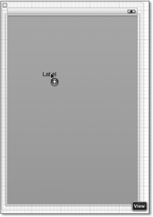

Zum Online-Shop
Zum Online-Shop
2.2 Das erste iOS-Projekt
Nach den ersten Schritten in Objective-C können Sie jetzt endlich mit Ihrem ersten iOS-Projekt beginnen. Öffnen Sie Xcode 4, und wählen Sie in der linken Spalte den Punkt Application unter iOS aus. Oben auf der rechten Seite erscheinen die in Abbildung 2.17 dargestellten Auswahlmöglichkeiten. Für dieses Projekt verwenden Sie die Vorlage Single View Application.

Abbildung 2.17 Erstellen einer Single View Application
Im nächsten Schritt geben Sie den Produktnamen und Ihre Firmenbezeichnung an. Als Produktnamen verwenden Sie in der Regel den Namen, den Ihre App oder Ihr Projekt erhalten soll. Vermeiden Sie aber möglichst Umlaute, Leer- und Sonderzeichen. Verwenden Sie also möglichst nur Buchstaben und Ziffern. Unter der Firmenbezeichnung können Sie einen beliebigen Bezeichner eintragen, der aus Buchstaben, Ziffern, Punkten und Minuszeichen besteht. Es hat sich eingebürgert, kanonische Domainnamen in umgekehrter Reihenfolge zu verwenden. Die Apps in diesem Buch erhalten beispielsweise alle die Firmenbezeichnung de.ifoo.
Xcode legt für das Projekt zwei Klassen an. Über das Feld Class Prefix können Sie den Namensanfang dieser Klassen festlegen. Wählen Sie in dem Dropdownmenü Device Family den Eintrag iPhone aus. Die drei Checkboxen schalten Sie aus. Auf deren Bedeutung gehen wir später noch genauer ein.
Abbildung 2.18 Der Name des Projekts
Xcode erzeugt aus der Firmenbezeichnung und dem Produktnamen den Bundle Identifier. Dieser muss für jede App im App-Store eindeutig sein. Durch die Verwendung des eigenen Domainnamens lassen sich somit leicht Duplikate vermeiden – und gut merken kann man sich diesen Bezeichner auch. Nachvollziehen kann man die Zusammensetzung des Bundle Identifiers in Xcode:
Abbildung 2.19 Zusammensetzung des Bundle Identifiers
Als Produktnamen für das Beispielprojekt verwenden Sie »HelloWorld«. Sie können später den Namen der App anpassen, der im Springboard (der Benutzeroberfläche von iOS) angezeigt wird, und ihn auch an verschiedene Sprachen anpassen.
Nach Beenden des Assistenten lässt sich das Projekt bereits kompilieren und ausführen. Sie können das ausprobieren, indem Sie den Button Run oben links in der Xcode-Toolbar drücken (siehe Abbildung 2.20). Vorerst sollten Sie allerdings darauf achten, dass in dem Dropdown rechts neben dem ausgegrauten Button Stop der Punkt iPhone Simulator ausgewählt ist.

Abbildung 2.20 Übersetzen und Starten der App im Simulator
Nach dem Run-Befehl übersetzt und linkt Xcode das Programm und führt es auf dem iPhone-Simulator aus. Da Sie das Projekt noch nicht verändert haben, sehen Sie nur einen grauen Bildschirm mit der Statusleiste im Simulator. Beenden Sie die Ausführung der App über den Stop-Button, der sich in Xcode neben dem Play-Button befindet.
In der linken Spalte von Xcode, der Nagivatorspalte, sehen Sie die Quelltextdateien des Projekts (und noch einige mehr). Die Gruppe HelloWorld enthält alle editierbaren Dateien Ihres Projekts. Dort finden Sie die Header- (Dateiendung .h) und Implementierungsdateien (Dateiendung .m) für zwei Klassen:
- Die Klasse HelloWorldAppDelegate ist das Application-Delegate. Abschnitt 2.2.2 geht auf diese Klasse genauer ein.
- Die andere Klasse, HelloWorldViewController, enthält die Controller-Komponente für die einzige View-Hierarchie dieses Projekts.
Außerdem befinden sich in der Gruppe zwei Dateien mit der Endung .xib. Diese Dateien enthalten beliebig viele Objekte. Sie beschreiben Views und andere Elemente, die Ihre Applikation benötigt.
Abbildung 2.21 Das Übersichtsfenster in Xcode
2.2.1 Der Interface Builder
Sie können in Cocoa Touch Views durch Programmcode oder über den Interface Builder erzeugen. Mit dem Interface Builder können Sie iOS-Oberflächen grafisch gestalten und in sogenannten XIB- oder NIB-Dateien speichern. NIB-Dateien (NIB steht für NEXT Interface Builder) liegen im Binär-, XIB-Dateien im XML-Format vor. Cocoa Touch verwendet ausschließlich das NIB-Format. Es verbraucht wesentlich weniger Speicherplatz als das XML-Format. Bei der Übersetzung eines Programms wandelt Xcode automatisch alle vorhandenen XIB-Dateien in das Binärformat um.
Diese Dateien speichern die Views als serialisierte Objekte ab. Diese Objekte sind sozusagen eingefroren. Sie wurden auf der Festplatte – beziehungsweise im Speicher des iPhone oder iPad – schlafen gelegt. Beim Laden der NIB-Datei stellt die Runtime-Umgebung die Objekte wieder her, sodass sie umgehend zur Verfügung stehen.
Für Ihren View-Controller HelloWorldViewController hat Xcode bereits bei der Erstellung des Projekts eine XIB-Datei angelegt. Sie finden diese in der Navigatorspalte von Xcode. Wenn Sie die Datei HelloWorldViewController.xib auswählen, erscheint der in Xcode integrierte Interface Builder.
Abbildung 2.22 Der Interface Builder innerhalb der Xcode-GUI
Links neben dem Layout-Bereich des Interface Builders wählen Sie auf der grauen Leiste das unterste Objekt aus – das helle Quadrat mit der gestrichelten, weißen Innenfläche, auf das in Abbildung 2.22 der Mauspfeil zeigt. Das ist der Hauptview (Vollansicht) der App, den der HelloWorldViewController verwaltet.
Um die folgenden Schritte nachvollzuziehen zu können, sollten Sie Xcode wie folgt einstellen:
Abbildung 2.23 Einstellungen von Xcode (oben rechts) für das aktuelle Beispiel
Das Layout der Arbeitsfläche können Sie über die sieben Buttons oben rechts in der Toolbar von Xcode konfigurieren. Stellen Sie alle Buttons so ein, wie in Abbildung 2.23 gezeigt.
Der Interface Builder zeigt jetzt eine graue Fläche, die eine Voransicht des Hauptviews darstellt. Rechts daneben befindet sich im Editorfenster die Headerdatei der Klasse HelloWorldViewController. Unten rechts im Xcode-Fenster finden Sie die Objektbibliothek, in der sich GUI-Elemente befinden. Sie können der App durch einfaches Ziehen mit der Maus diese Elemente hinzufügen.
Abbildung 2.24 Die Objektbibliothek von Xcode
Suchen Sie in der Bibliothek nach dem Element Label. Falls Sie es nicht sofort finden, können Sie es auch mit der Suchfunktion am unteren Rand des Fensters aufspüren. Wenn Sie mit der Maus auf ein Element klicken, erscheint ein Popup-Fenster, das die Eigenschaft des betreffenden Elements erklärt. Diese Hilfe-Funktion ist gerade für Einsteiger extrem praktisch, denn sie erspart das umständliche Nachschlagen in Büchern oder der Online-Dokumentation.
Abbildung 2.25 Popup-Hilfe zu den GUI-Elementen
Ziehen Sie jetzt das Label bei gedrückter Maustaste auf den Hauptview der App im Interface Builder, und lassen Sie über dem Hauptview die Maustaste los.
Abbildung 2.26 Platzieren eines Labels auf dem Hauptview
Anschließend aktivieren Sie durch einen Doppelklick auf den Text des Labels (»Label«) die Editierfunktion und geben einen eigenen Text ein, z. B. das obligatorische »Hello World« oder irgendwas anderes, was Ihnen gerade einfällt. Beenden Sie diese Eingabe mit der -Taste, und ziehen Sie das Label dann mit der Maus in die linke obere Ecke des Views, bis Xcode Hilfslinien zur Ausrichtung einblendet. Diese Hilfslinien sind ein angenehmes Werkzeug, um GUI-Elemente auszurichten – je komplexer eine GUI ist, desto mehr weiß man als Programmierer dieses Hilfsmittel zu schätzen.
Abbildung 2.27 Ausrichtung des Labels mit Hilfslinien
Die – zugegebenermaßen nicht als Raketentechnologie zu bezeichnende – App ist jetzt
fertig für die Ausführung. Wählen Sie dazu den Run-Button in der Toolbar von Xcode, oder drücken Sie  +
+  . Xcode kompiliert und linkt die App und startet anschließend automatisch den iPhone-Simulator
mit der App.
. Xcode kompiliert und linkt die App und startet anschließend automatisch den iPhone-Simulator
mit der App.
Abbildung 2.28 Noch nicht ganz fertig für den App Store ...
2.2.2 Delegation
Sie sind im vorstehenden Beispiel bereits mit dem Thema Delegation in Kontakt gekommen, ohne dass wir in der Beschreiben näher darauf eingegangen sind. Für dieses einfache Beispiel kommen Sie noch gerade so ohne Wissen über die Delegation zurecht. Für die tägliche Arbeit mit Cocoa Touch brauchen Sie aber unbedingt ein fundiertes Wissen über deren Prinzip und Funktionsweise, da sich dieses Muster wie ein rotes Band durch Cocoa Touch zieht. In der Zeit, als das Internet noch schwarz-weiß und prozedurale Programmierung noch das vorherrschende Paradigma war, gab es in vielen C- oder Pascal-Programmen einen Haufen Funktionen, die die Aufgaben des Programms erledigt haben. Funktionen haben aber den entscheidenden Nachteil, dass sie sich nur schlecht erweitern oder an spezifische Programmbedürfnisse anpassen lassen.
Mit der Einführung der objektorientierten Programmierung (OOP) hat sich die Situation geändert, da die OOP durch die Paradigmen der Vererbung und der Polymorphie bereits Konzepte für die Erweiterbarkeit und Modifizierung bestehenden Programmcodes besitzt. Diese Paradigmen sind zwar sehr nützlich, in der Praxis zeigt sich aber häufig, dass sie nicht immer ausreichen. In den schlimmsten Fällen kann eine undurchdachte Vererbungshierarchie sogar zu unverständlichem, schlecht wartbarem Code führen.
Viele dieser Probleme lassen sich aber durch die Ausnutzung der Möglichkeiten objektorientierter Sprachen umgehen, ohne dabei alles auf die Karte Vererbung zusetzen. Ein Entwurfsmuster, um die Funktionalitäten von Objekten anzupassen und zu erweitern, ist die Delegation. Ihr Prinzip ist dem vieler Vorgesetzter abgeschaut: Den täglichen Kleinkram, den sie selber nicht erledigen wollen oder können, geben sie einfach an andere weiter.
In der objektorientierten Programmierung funktioniert das ganz ähnlich. Wenn bei einer Klasse bestimmte Implementierungsdetails offen gelassen werden sollen, delegiert sie diese Aufgaben an ein anderes Objekt, das Delegate, das sich um den Kleinkram kümmert.
Für diesen Zweck besitzen viele Klassen ein Attribut delegate, das auf ein Delegate zeigen kann. Das auf das Delegate zeigende Objekt ist dann das delegierende Objekt. Die Delegate-Methoden sind eventgesteuert, d. h., wenn das delegierende Objekt ein bestimmtes Ereignis durchläuft, ruft es die entsprechenden Methoden im Delegate auf – sofern es diese implementiert.
Cocoa Touch verwendet für die meisten Delegate-Methoden ein einheitliches Muster. Der Methodenname beginnt in der Regel mit dem Namen der delegierenden Klasse, und mit dem ersten Parameter wird das delegierende Objekt übergeben. Typische Vertreter finden Sie im App-Delegate Ihres Hello-World-Projekts:
- (void)application:(UIApplication *)application didFinishLaunchingWithOptions:(NSDictionary *)options;
Viele Delegate-Methoden enthalten im Namen die Hilfsverben should, will oder did, die Auskunft über die Funktion der Methode geben. Über Methoden mit dem Namensbestandteil should fragt das delegierende Objekt den Delegate, ob dieses eine bestimmte Operation ausführen soll. Die Namensbestandteile will oder did enthalten Methoden, deren Ausführung vor beziehungsweise nach einem bestimmten Ereignis erfolgt. Abbildung 2.29 stellt die Beziehung zwischen der delegierenden Klasse und dem Delegate-Protokoll grafisch dar.
| Delegation und Vererbung |
|
Durch Delegation lässt sich Vererbung in vielen Fällen umgehen. Wenn Ihnen das Standardverhalten
eines Objekts nicht gefällt, sollten Sie immer zuerst prüfen, ob Sie Ihr Ziel durch
eine entsprechende Konfiguration des Objekts erreichen können. Außerdem sollten Sie
unbedingt überprüfen, welche Anpassungen Ihnen die Delegation bietet. Nicht alle Klassen
unterstützen allerdings Delegation.
|
Abbildung 2.29 Ein Delegate implementiert Methoden des Delegierenden.
Das HelloWorld-Beispiel aus Abschnitt 2.2 verwendet bereits Delegation. Wenn Sie das Projekt in Xcode betrachten, sehen Sie, dass es eine Klasse HelloWorld AppDelegate besitzt:
Abbildung 2.30 Das »AppDelegate« von »HelloWorld«
Das HelloWorldAppDelegate ist das Delegate eines Objekts der Klasse UIApplication, das die Applikation repräsentiert. Sobald dieses Objekt ein Ereignis registriert, informiert es sein Delegate – im vorliegenden Beispiel also HelloWorldAppDelegate – über dieses Ereignis. Zu diesen Ereignissen gehören alle, die den Lebenszyklus der App betreffen (siehe Abschnitt 1.4, »Besonderheiten der Programmierung«).
Damit das HelloWorldAppDelegate besagte Ereignisse auswerten kann, implementiert es das Protokoll UIApplicationDelegate, was an der entsprechenden Zeile in der Header-Datei des Delegates zu erkennen ist:
@interface HelloWorldAppDelegate : NSObject<UIApplicationDelegate>
Die Headerdatei von UIApplicationDelegate deklariert alle verfügbaren Methoden als optional. Nichtsdestotrotz sollte eine Applikation zumindest die wichtigsten Nachrichten abfangen, da sie ansonsten nicht auf wichtige Zustandsänderungen reagieren kann.
Eine der wichtigsten Delegate-Methoden des Application-Delegates ist application:didFinishLaunchingWithOptions: (Sie bemerken das Hilfsverb did im Methodennamen?). Diese Methode ruft das Applikationsobjekt auf, nachdem das Betriebssystem die App gestartet hat. Die Projektvorlage hat diese Methode bereits implementiert:
- (BOOL)application:(UIApplication *)application didFinishLaunchingWithOptions:(NSDictionary *)launchOptions {
// Override point for customization after application launch.
self.window.rootViewController = self.viewController;
[self.window makeKeyAndVisible];
return YES;
}
Listing 2.28 Startmethode des App-Delegates
Die Methode weist dem Fenster der Applikation einen View-Controller zu und bringt es über die Nachricht makeKeyAndVisible zur Anzeige.
Dies ist ein greifbares Beispiel für das Prinzip der Delegation. Ohne eine Subklasse von UIApplication ableiten und ohne das Application-Singleton verändern zu müssen, können Sie auf alle Ereignisse der Applikation reagieren.
Abbildung 2.31 stellt alle Delegatemethoden der Applikation zusammen mit den drei Applikationszuständen dar, wobei die gestrichelten Pfeile die Aufrufreihenfolge der Methoden zwischen den Zuständen angeben. Die durchgezogenen Pfeile zeigen die Zustandsübergänge an. Wenn die Applikation application: didFinishLaunchingWithOptions: aufruft, ist sie noch inaktiv. Beim Übergang in den aktiven Zustand sendet sie dann die Nachricht applicationBecomeActive:. Wenn Sie eine Applikation über den Home-Button des Geräts in den Hintergrund schicken, wechselt die Applikation in den Zustand Background.
Abbildung 2.31 Die Delegatemethoden der Applikation
Sie können das Verwenden von Delegate-Methoden im vorliegenden HelloWorld-Beispiel selber testen. Fügen Sie in der Implementierungsdatei HelloWorldAppDelegate.m eine simple Implementierung für die Methode applicationDid ReceiveMemoryWarning hinzu:
- (void)applicationDidReceiveMemoryWarning:
(UIApplication *)application {
NSLog(@"Oh nein, Speicher voll!");
}
Diese Methode ruft das iOS bei knappem Hauptspeicher auf und ist eine Aufforderung, umgehend Ressourcen freizugeben. Wenn Sie dieser freundlichen Aufforderung nicht umgehend nachkommen, beendet das Betriebssystem gnadenlos Ihr Programm. Die Implementierung besteht in diesem Fall lediglich aus einer Konsolenmeldung. In der Praxis ist das natürlich nicht die angemessene Art, um auf knappen Speicher zu reagieren.
Übersetzen und starten Sie die App. Möglicherweise wird Xcode fragen, ob es die geänderten Dateien automatisch speichern soll. Diese Frage können Sie immer ungestört mit Ja beantworten. Sie können auch unter Xcode · Preferences... im Tab General die Option Auto-save auf Always setzen, um diese Nachfragen abzuschalten (siehe Abbildung 2.32). Da der Editor von Xcode Änderungen auch über den letzten Speicherpunkt hinaus rückgängig machen kann, können Sie das automatische Speichern aktivieren, ohne sich damit größere Probleme einzuhandeln.
Abbildung 2.32 Automatisches Speichern geänderter Dateien
Nach dem Start der App im Simulator rufen Sie den Menüpunkt Hardware · Speicherwarnhinweis simulieren auf, der eine Speicherwarnmeldung erzeugt. Beobachten Sie dabei die Ausgabe der Konsole:
15:36:15.064 HelloWorld[6396:207] Received memory warning.
15:36:15.067 HelloWorld[6396:207] Oh nein, Speicher voll!
Et voilà, die Applikation ruft die im Delegate implementierte Methode des UIApplicationDelegate-Protokolls korrekt auf, und das schon wieder ganz ohne Vererbung.
Ihr Kommentar
Wie hat Ihnen das <openbook> gefallen? Wir freuen uns immer über Ihre freundlichen und kritischen Rückmeldungen.


{kind=link}
{kind=link}
{kind=link}
{kind=link}
{kind=link}
{kind=link}
{kind=link}
{kind=link}
{kind=link}
{kind=link}
{kind=link}
{kind=link}
{kind=link}
{kind=link}